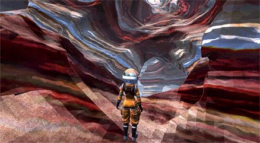

|This 2-man project was about researching ways of simulating believable cave environments at interactive rates using voxels on the GPU.
It lasted 6 months and involved PCG research, application development, and user testing.
Our generation pipeline processes GPU voxel volumes with a set of DirectX 11 Compute Shaders. My modelling solution can be thought of as guided intersecting procedural 3D brush strokes of morphing shapes, on a solid voxel volume.
|Cave results rendered with my HLSL procedural solid texturing shaders:


Procedural
Triplanar
Shaders
Worldspace
Curl Noise
Solid Texturing
|The tool implementation consists of three main parts:
1 - A controllable L-system which generates a set of structural points. [partner's focus]
It emulates the expanded cracks and passages which form cave structures in nature.
We evolved it and tried to apply a "human fitness function".
2 - A detailing component where I use an array of metaballs and noise (Voronoi, Simplex, Curl). [my focus]
I carve the voxel volumes along specific structural points (applying additive-noise energy field perturbation to the values of the volume).
3 - A component for isosurface extraction and for shading. [my focus]
I calculated mesh normals, wrote procedural materials with a pixel-lit Lambert shader with triplanar projection, bump mapping, Curled Simplex noise, solid texturing, procedural details, animation etc.
HLSL
Direct
Compute
Meta
Field
Perturbation
|The key is the interesting emergent behaviour from when the two modules interact (structuring and detailing), when they intersect with themselves.
|On the left you can see a simple non-intertwined explanatory example:
| Results:
|Remember, this is rushed student work, not a finished product.
It's published with Unity Free's limitations (no 3D texture support), but:
[Here's a test webBuild].
Also, since I'm such a nice guy, I'll give you the entire source with the Unity project on Bitbucket: https://bitbucket.org/tdbe/pcgc...
| And here is a video of a test run: